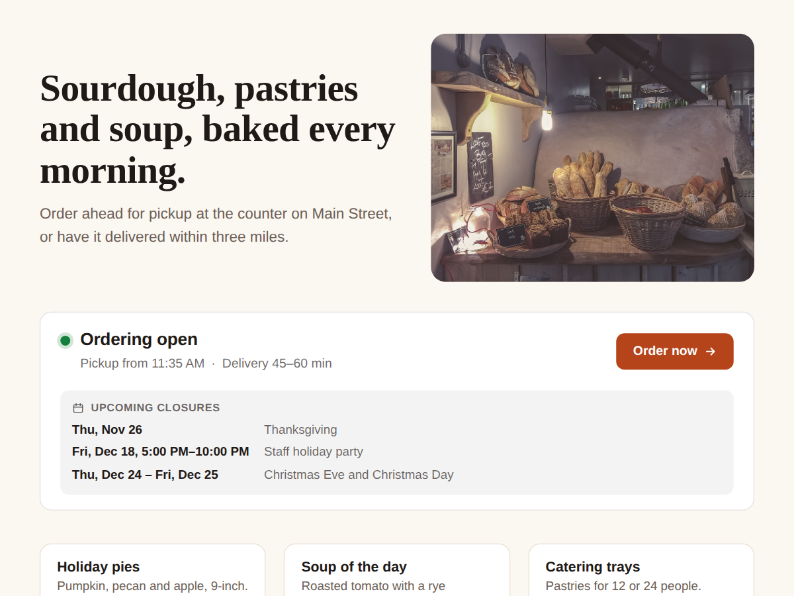

Order Status: Pickup Times
Ordering open or closed, and next pickup time
- Live open, paused or closed status
- Next pickup time and delivery time
- Holiday closures listed ahead (Premium)
- Several locations in one widget (Premium)

What it does
When you pause online ordering on a busy Friday, your homepage still says "Order online". This widget fixes that. It reads your restaurant's own ordering setup and shows the real status on any page: "Ordering open, pickup from 12:15 PM, delivery 45 to 60 min", "Online ordering paused until 5:00 PM" or "Closed: Thanksgiving".
There is nothing to type. Pause ordering, change the prep time or add a holiday closure in your dashboard, and the widget shows it within a minute. If you only take pre-orders, it says "Pre-order now" with the first pickup time.
Put it at the top of your homepage, on the menu page or next to your catering menu. The Order now button opens your ordering page, and it hides while ordering is paused or closed.
It's made for bakeries, cafes, pizzerias and caterers who are tired of answering "are you open for pickup today?" on the phone.
The free plan shows the live status for one location, with a small credit link. Premium lists your upcoming closures and holiday hours, shows up to 6 locations at once, adds a full-width bar and a small badge layout, lets you write your own wording in 7 languages, and removes the credit link.
Price
Free
- Live ordering status, one location
- Next pickup time and Order button
- Updates when you pause ordering
- Small credit link
Premium
$4/month, yearly 20% off
- Upcoming closures and holiday hours
- Up to 6 locations
- Bar and badge layouts, own wording
- Remove the credit link